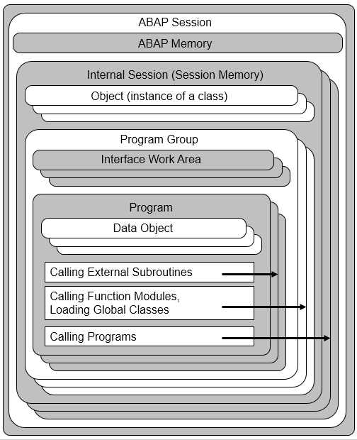

AS ABAP Release 754, ©Copyright 2019 SAP SE. All rights reserved.
ABAP Keyword Documentation → ABAP - Overview → ABAP Programs in AS ABAP →Programs in the Internal Session
The following figure shows the organization of programs within an internal session of an ABAP session in a user session of AS Instance.

Program Groups
In an internal session it is possible to load multiple programs that can be organized in program groups. Once an internal session is exited, it is closed. It is then no longer possible to access data and objects of the internal session.
Main Program Group
When an internal session is created by calling an ABAP program using SUBMIT or a transaction code, the main program group is created and the called program is its main program. The full internal session exists for as long as the main program of the main program group is being executed. This can be an executable program, a module pool, or a function group.
Additional Program Group
Each time a new class pool or a new function group is loaded by being used externally, an additional program group is created and the class pool or the function group is the main program of the additional program group. A pool or group is usually used externally when the components it exposes are accessed,(these are the visible components of the global class or function module). However, this can also occur when local components are accessed, such as when a type is specified using absolute type names. An additional program group is persisted for as long as the internal session exists.
Main Program of a Program Group
The first program loaded of a program group is the main program of this group. The main program of a main program group is the first program loaded into the internal session by a program call (this program is an executable program, module pool, or function group). The main program of an additional program group is a class pool or a function group whose loading results in the forming of the additional program group.
Programs Loaded into a Program Group
When programs that are not function groups or class pools are loaded because of an external usage, they do not form additional program groups, instead they are loaded into the program group of the user. This happens for example:
Notes
Data Objects
The data objects of a program, with the exception of the interface work area, belong exclusively to their program and are only visible there. A loaded program exists for the same length of time as the internal session. After the return from a program, its data objects are preserved and are available if a procedure of the program is called again.
Class Instances
Objects as instances of classes can be used by all programs (and objects) of an internal session. An object exists for as long as there are users for (and hence references to) the object.
Note
This means that references to objects of the internal session can be passed to externally called procedures.
Interface Work Areas
Data objects declared using TABLES or DATA BEGIN|END OF COMMON PART ... are interface work areas. These are only created once per program group and are used by all programs of a program group together.
Note
The assignment of a program to a program group, and thus the determination of which other programs it shares the interface work area with, can depend on the usage sequence.
Dynpros, Lists, and GUI Statuses
Only the dynpros of the main program of a program group can be called using CALL SCREEN. After an internal session is loaded, these are the dynpros of the main program of the main program group. The main programs (function groups) of additional program groups can also call their own dynpros.
Lists are always assigned to the current dynpro sequence and therefore also to the main program of the program group.
By default, SET PF-STATUS is used to access the GUI status of the main program of a program group and use its data objects for dynamic texts.
All programs of a program group work with the dynpros, lists, and GUI status of the main program by default. A statement CALL SCREEN in an externally called subroutine, for example, never calls a dynpro from its own master program. The dialog modules and list result blocks of the main program are executed.